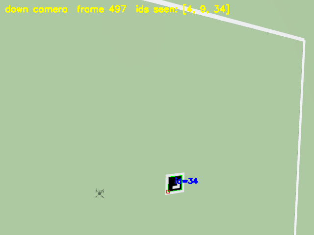
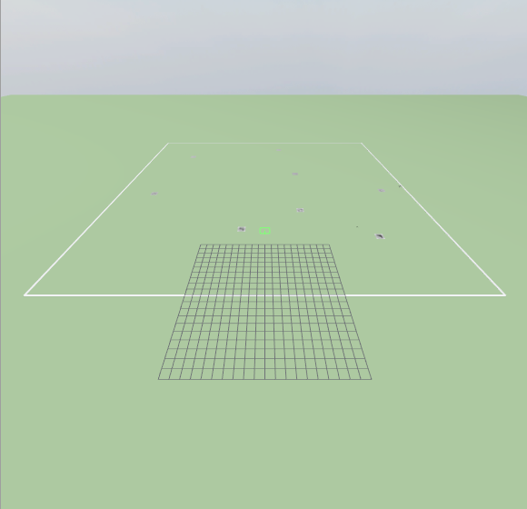

Search & find.
Eight targets, each located to under a metre.
A drone with a downward camera sweeps a 60 × 60 m field in PX4/Gazebo. Eight ArUco markers sit on the ground at seeded positions. Every time the camera sees one, the drone works out where it is on the ground using PX4's own position and attitude estimate. The simulator's true positions are never given to the drone; they are only used afterwards, to score the result.
Figures from the recorded run below (also the flight in the 3D Search Demo). Six runs so far, all 8/8 with no false ids; worst-case error 0.45–0.63 m across them.


▶ Watch this flight as a 3D replay →
Result, target by target
Reported position (from the drone's estimate) against the true position (from the world file), in metres north and east of the launch point.
| Marker id | Reported N, E | True N, E | Error | Sightings |
|---|---|---|---|---|
| Loading the recorded report… | ||||
Loaded from data/search_report.json (the committed evidence file, evidence/search/) and
data/search_targets.json (the world's ground truth). A test keeps both byte-identical to the repository copies.
How it works
- World. A generated Gazebo world: open field, eight textured ArUco markers, and a ground-truth file that only the scorer reads (a test fails if flight code opens it).
- Camera. An x500 drone with a camera pointing straight down (640 × 480, 100° field of view). At 8 m a 1 m marker is about 34 pixels wide.
- Detect. OpenCV finds every marker in each frame.
- Locate. Each detection becomes a ray from the camera, rotated by PX4's attitude estimate and intersected with the ground. A target is reported once it has been seen three times; its position is the median of the sightings.
- Score. After landing, a separate scorer compares the report with the ground truth: found, missed, false ids, and position error.
What this does not show yet
- One drone, a scripted sweep. The lanes are fixed in advance and the drone does not react to what it sees. Splitting the search across several drones, with the fault-tolerant coordinator, is the next step.
- Simulation only. Gazebo renders an ideal camera: no lens distortion, motion blur, lighting changes or wind, and the ground is perfectly flat.
- Remaining error is mostly along the flight lanes, which fits a small delay between when a frame is taken and the pose it is paired with. That delay has not been measured.
Run it yourself
With PX4 SITL and Gazebo Harmonic installed: scripts/run_search_demo.sh opens the Gazebo window and the live camera
view, flies the sweep and prints the score. Source:
geolocation ·
flight ·
world generator.